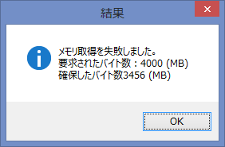
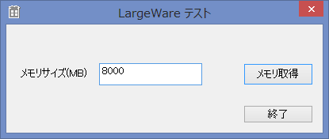
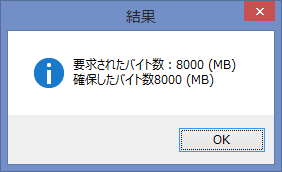

Win7 64bit（WoW64） ではプロセスあたり最大4GBを使用できます。
Win7 32bit ではプロセスあたり最大2GBを使用できます。
これはMicrosoftの正式見解です。
ただし、最大４GBで動作するには若干条件があるようです。
「IMAGE_FILE_LARGE_ADDRESS_AWARE 指定あり」でコンパイルした32bit exe だと最大4GB
ということらしいです。.NET（C#)の場合はコンパイルオプションでの指定はできず、editbin という外部ツールでこのフラグを後付するそうです。
"editbin /LARGEADDRESSAWARE"
評価環境やコンパイル環境などの情報があまり記載されていないので、いずれにせよテストプログラム等による確認が必要。ひょっとすると比較的新しい開発環境ではデフォルトで上記オプションが有効化されていたりする場合もあると思います。
Visual Studio 2012 Update3 と C++ を使ってテストプログラムを作成してみたので、以下結果報告。
評価環境は以下の通り。
========================
OS：Windows8 64bit
開発環境： Visual Studio 2012
Update3
言語： Win32、C++
========================
1. x86 + LARGEADDRESSAWARE
こんなテストプログラムを作成。
約3.5GBのメモリを確保できました。"LARGEADDRESSAWARE"無しだと1.3GBぐらいまでしかメモリ確保できませんでした。

2. x64
同様に x64 コンパイルして実験。上限を確認してもきりがないので、メモリ取得サイズは8GBにて。

x64 だとやっぱり8GBなんて楽勝に取得できるみたいです。

3. サンプルプログラム
上記のテストプログラムを以下からダウンロードできるようにしておきます。
プログラムはWin32プロジェクトとして作成していますので、Visual
Studio 以外の環境へも移植が容易でしょう。
ダウンロード
補足説明１：
なお、ソースプログラム中にある以下の記述は Windows XP
以降のコモンコントロールを使用するための記述です。マニュフェストでコモンコントロールのバージョン情報を記載する必要があるそうで、VS2005から加わった
#pragma の記述だそうです。コモンコントロールのバージョンを 6.0.0.0
で指定します。このマニュフェストが無いとビジュアル的に古い感じのダイアログになってしまいます。
#if defined _M_IX86 #pragma comment(linker,"/manifestdependency:\"type='win32' name='Microsoft.Windows.Common-Controls' version='6.0.0.0' processorArchitecture='x86' publicKeyToken='6595b64144ccf1df' language='*'\"") #elif defined _M_IA64 #pragma comment(linker,"/manifestdependency:\"type='win32' name='Microsoft.Windows.Common-Controls' version='6.0.0.0' processorArchitecture='ia64' publicKeyToken='6595b64144ccf1df' language='*'\"") #elif defined _M_X64 #pragma comment(linker,"/manifestdependency:\"type='win32' name='Microsoft.Windows.Common-Controls' version='6.0.0.0' processorArchitecture='amd64' publicKeyToken='6595b64144ccf1df' language='*'\"") #else #pragma comment(linker,"/manifestdependency:\"type='win32' name='Microsoft.Windows.Common-Controls' version='6.0.0.0' processorArchitecture='*' publicKeyToken='6595b64144ccf1df' language='*'\"") #endif |
補足説明２：
マニュフェストファイルを別ファイル指定してコンパイルしています。実行ファイルと同じ場所にあるマニュフェストファイルを消さないでください。
補足説明３：
(謎)x86の実行ファイルをデスクトップで実行した場合に、何故か上記補足説明１で有効化したはずのビジュアルスタイルが有効化されずに古いダイアログ形式で表示されました。謎です。
4. 参考URL
以下、参考URLです。
古い記事が大分混ざっているので、Win7やWin8など使用するターゲット環境で再確認のうえでやってみてください。
参考URL：
記載： 2013年5月12日 木下英俊